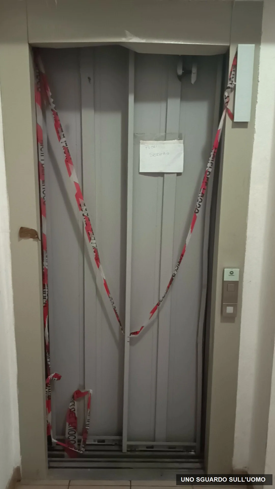

In questo dossier
- Non è un quartiere degradato ed è proprio questo il punto
- La burocrazia come circuito chiuso
- Chi gestisce il comparto in assenza di un amministratore
- L’ascensore del civico 11 dal guasto alla nebbia amministrativa
- I tempi dichiarati da ALER e quelli osservati a via Kennedy
- Il portone quando cinque anni diventano manutenzione ordinaria
- Pulizie il servizio esiste ma quanto spesso arriva
- Lampadine scale e piccole manutenzioni quando l’inquilino supplisce
- Igiene ambientale ciò che non si vede per anni
- Il verde non è un problema estetico
- Una strada privata usata come una strada pubblica
- Mezzi fermi da anni negli spazi comuni
- Barriere architettoniche un problema che attraversa tutto il comparto
- Sessanta appartamenti che potrebbero essere un piccolo gioiello
- Il rapporto economico non è simmetrico
- ALER paga i fornitori in ritardo un dato da leggere correttamente
- Gli strumenti dichiarati da ALER e i risultati osservati
- Le domande rivolte ad ALER
- Conclusione
- Fonti
Non è un quartiere degradato ed è proprio questo il punto
Chi arriva nel comparto dell’Azienda lombarda per l’edilizia residenziale (ALER) di via Kennedy, a Carate Brianza, nei periodi in cui il verde è curato, difficilmente immagina di essere davanti a un insediamento di edilizia residenziale pubblica. Non ci sono torri, non ci sono enormi blocchi ad alta densità, non c’è il paesaggio tipico delle grandi periferie metropolitane. Ci sono sei palazzine basse, piano terra e due piani, inserite nel verde di una cittadina della Brianza.
I civici sono 1, 3, 5, 7, 9 e 11. Le prime quattro palazzine hanno nove appartamenti ciascuna; i civici 9 e 11 ne hanno dodici. In tutto, sessanta appartamenti. Una dimensione che rende ancora più evidente una domanda semplice: quanto dovrebbe essere difficile mantenere bene un comparto di queste proporzioni?
La risposta, guardando molte delle criticità raccolte in questa indagine, è quasi paradossale: non servirebbero grandi opere. Tolto il capitolo dell’ascensore del civico 11, la maggior parte dei problemi riguarda attività ordinarie. Tagliare l’erba. Potare gli alberi. Pulire le scale. Cambiare lampadine. Disinfestare. Sistemare un portone. Tracciare stalli. Mettere segnaletica. Dare una logica alla viabilità interna.
Via Kennedy non è un patrimonio da ricostruire. È un patrimonio da gestire.
Ed è qui che la storia cambia. Perché alcune criticità sembrano accompagnare il comparto praticamente dalla sua nascita, alla fine degli anni Settanta. Altre, secondo le testimonianze raccolte, si trascinano da circa dieci anni. Il problema, quindi, non è soltanto che qualcosa non venga fatto. È che l’eccezione tende a diventare abitudine, e l’abitudine finisce per diventare normalità.
La burocrazia come circuito chiuso
Il filo che lega quasi tutti i problemi di via Kennedy non è la mancanza assoluta di canali di comunicazione. Al contrario, ALER dispone di centralini, call center, posta elettronica, posta elettronica certificata (PEC), settori tecnici, numeri di emergenza e imprese incaricate. Dal gennaio 2025 la sede di Monza Brianza ha anche un nuovo call center che, nelle intenzioni dichiarate dall’Azienda, dovrebbe rendere più facile inoltrare richieste di manutenzione, sollecitare aggiornamenti e ridurre i tempi di attesa. La gestione territoriale fa capo all’Unità Operativa Gestionale (UOG) di Monza Brianza.
Sulla carta il percorso è lineare: il cittadino segnala, la richiesta viene indirizzata al reparto competente, il problema viene gestito. Ma il punto di questa indagine è esattamente ciò che accade quando il percorso amministrativo esiste e il risultato materiale continua a non arrivare.
A via Kennedy, secondo gli inquilini, il meccanismo diventa spesso questo: problema, telefonata, segnalazione, sollecito, nuova telefonata, nuova segnalazione, rinvio al responsabile, altra attesa. La pratica si muove. Il problema, molto meno.
Una segnalazione dovrebbe essere l’inizio della soluzione. Quando diventa il punto di arrivo, rischia di trasformarsi in un alibi amministrativo.
Questo non significa che ogni telefonata venga ignorata o che nessuno lavori. Significa qualcosa di più sottile e, per chi abita lì, più frustrante: la macchina può produrre attività senza produrre una soluzione verificabile in tempi ragionevoli. E il cittadino, dall’esterno, non ha quasi mai accesso alla catena reale delle decisioni: chi ha autorizzato, quando, con quale ordine, con quale priorità, con quale termine.
Chi gestisce il comparto in assenza di un amministratore
Nel comparto di via Kennedy non esiste un amministratore condominiale. Le sessanta famiglie residenti non sono sessanta proprietari riuniti in un condominio: sono assegnatari di alloggi ALER. L’Azienda non interviene quindi come semplice sostituto occasionale di un amministratore assente. È proprietaria e locatrice del patrimonio e gestisce direttamente le parti e i servizi comuni.
La stessa ALER, ricostruendo la storia della struttura di Monza e Brianza, afferma che la gestione territoriale ha assunto in piena autonomia la manutenzione ordinaria, la manutenzione straordinaria, il verde, le pulizie delle parti comuni e le procedure amministrative. La Carta dei Servizi distingue poi tra spese a carico della proprietà e spese ordinarie reversibili agli assegnatari. Ma l’eventuale addebito del costo non trasferisce agli inquilini il compito di organizzare il servizio, incaricare le imprese, controllare le prestazioni e intervenire quando il servizio non viene eseguito.
Il punto, quindi, non è chi sostenga materialmente ogni singola voce di spesa. Il punto è chi abbia il dovere gestionale di far funzionare il comparto. In assenza di un amministratore, quel referente resta ALER.
I costi possono essere reversibili. La responsabilità di organizzare e controllare i servizi comuni non lo è.
L’ascensore del civico 11 dal guasto alla nebbia amministrativa
Il caso più evidente è l’ascensore del civico 11.
Il 3 agosto 2026, intorno alle 20, la cabina raggiunge il piano terra ma le porte non si aprono. Due persone e due cani restano bloccati all’interno. Intervengono i Vigili del Fuoco e la liberazione avviene dopo oltre un’ora. Il precedente dossier di UNO SGUARDO SULL’UOMO documentava che il 16 agosto l’ascensore era ancora fuori servizio, tredici giorni dopo.
Da quel momento il problema non è più soltanto tecnico. Diventa soprattutto un problema di tempi, informazioni e responsabilità.
All’inizio di settembre un tecnico presente sul posto riferisce che sta effettuando misurazioni. Nel frattempo, agli inquilini viene verbalmente rappresentato che la porta è stata ordinata o è “in ordinazione”. Circa un mese fa, un’operatrice ALER comunica che avrebbe effettuato un sollecito; una quindicina di giorni dopo, la stessa operatrice riferisce nuovamente che la porta è in ordinazione.
Il 6 ottobre, però, un tecnico di TK Elevator Italia si presenta al civico 11 e rileva ancora una volta le misure. Un’inquilina gli chiede quando verrà eseguito l’intervento. Il tecnico risponde che sta prendendo le misure, che non conosce i tempi e che per le informazioni bisogna chiamare ALER.
La stessa inquilina ricontatta quindi ALER e fa notare il punto che, a quel momento, diventa inevitabile: se il 6 ottobre si stanno ancora prendendo le misure della porta, che cosa significava esattamente che la porta era già “in ordinazione”? L’operatrice riferisce che avrebbe inviato un’ulteriore segnalazione all’ingegner Andrea Monti.
Qui va fatta una distinzione rigorosa. Non sappiamo, sulla base dei documenti finora disponibili agli inquilini, se la porta sia stata effettivamente ordinata, in quale data e con quale specifica tecnica. Sappiamo che il 6 ottobre TK Elevator ha inviato un tecnico a rilevare le misure. Questo dimostra quantomeno che una fase tecnica è stata attivata; non consente però di trasformare in fatto documentato ciò che fino a quel momento era stato comunicato verbalmente.
Negli atti ufficiali più recenti disponibili, l’ingegnere Andrea Monti compare come Responsabile unico del progetto per procedure riguardanti lavori e servizi manutentivi, mentre la responsabilità della UOG di Monza Brianza è attribuita all’ingegnere Antonio Cazzaniga. Gli inquilini riferiscono di avere inviato numerose email direttamente a Monti senza ricevere riscontro. È corretto riportare questi elementi per ricostruire il percorso delle segnalazioni, senza attribuire responsabilità personali che i documenti disponibili non permettono di provare.
ALER indica pubblicamente TK Elevator Italia, società per azioni (S.p.A.), come ascensorista per gli immobili gestiti dalla UOG di Monza Brianza. Anche questo elemento chiarisce la catena: l’impresa manutentrice esiste, il recapito esiste, il tecnico interviene. Ma sul cronoprogramma dell’intervento il tecnico stesso rinvia ad ALER. Per l’inquilino, quindi, ALER rimane il nodo informativo indispensabile.
Dopo il rilievo delle misure, una sostituzione di questo tipo non si esaurisce nel montaggio di una porta. Occorrono ordine o produzione del componente, consegna, coordinamento con eventuali opere murarie, rimozione del vecchio elemento, installazione, regolazioni, verifiche e rimessa in servizio. Se la porta è standard i tempi possono essere diversi rispetto a un componente realizzato su misura. Ma proprio per questo sarebbe indispensabile una comunicazione precisa: data dell’ordine, tipo di componente, data prevista di consegna, data prevista di montaggio e tempi di collaudo.
Senza queste informazioni, l’inquilino resta davanti a formule generiche: “abbiamo segnalato”, “abbiamo sollecitato”, “è in ordinazione”.
L’assenza prolungata dell’ascensore incide sull’autonomia quotidiana dei residenti e, soprattutto, su quella degli inquilini affetti da gravissime patologie che comportano condizioni di invalidità grave. Non serve trasformare le condizioni personali di chi vive nello stabile in materiale emotivo. Basta comprendere che, in una palazzina con persone fragili, un ascensore fermo per mesi non è un disagio equivalente a una lampadina bruciata.
Il punto non è soltanto che l’ascensore sia rotto. Il punto è che, dopo due mesi, gli inquilini non riescono ancora ad avere una cronologia trasparente dell’intervento.
I tempi dichiarati da ALER e quelli osservati a via Kennedy
La Carta dei Servizi di ALER stabilisce che gli interventi manutentivi devono essere avviati entro 24 ore se urgentissimi, 48 ore se urgenti e 20 giorni se ordinari. La parola usata è “avviati”, non “conclusi”: un sopralluogo o una prima attività tecnica possono quindi segnare l’avvio senza coincidere con la soluzione del guasto.
Questa distinzione non basta però a spiegare la distanza osservata a via Kennedy. Tra il blocco dell’ascensore del 3 agosto e il nuovo rilievo delle misure del 6 ottobre sono trascorsi 64 giorni. Il portone viene segnalato come difettoso da almeno cinque anni. Le pulizie, nel periodo osservato, arrivano a intervalli di circa tre settimane. Gli abitanti riferiscono interventi di derattizzazione assenti da circa dieci anni e mezzi inutilizzati presenti negli spazi comuni da un periodo analogo.
Per valutare il rispetto della Carta occorrerebbe conoscere, per ogni pratica, la data di ricezione, la classificazione attribuita, la prima attività registrata e la data di chiusura. Ma sul piano della vita quotidiana il dato è già evidente: l’avvio amministrativo di una pratica non può sostituire indefinitamente il risultato.
Ventiquattro ore, quarantotto ore o venti giorni descrivono l’avvio previsto. A via Kennedy i problemi si misurano in settimane, mesi e anni.

Il portone quando cinque anni diventano manutenzione ordinaria
Sempre al civico 11 c’è un problema molto meno complesso dell’ascensore e, proprio per questo, forse ancora più indicativo: il portone d’ingresso, secondo gli inquilini, non chiude correttamente da almeno cinque anni.
Non servono componenti speciali prodotti su misura, non serve coordinare un impianto elevatore, non serve attendere verifiche tecniche particolari. È uno degli esempi più semplici di come una piccola anomalia, quando resta irrisolta abbastanza a lungo, smetta di essere percepita come guasto e diventi parte del paesaggio.
È lo stesso meccanismo che attraversa l’intero comparto: il problema non è necessariamente enorme. È il tempo a renderlo enorme.
Pulizie il servizio esiste ma quanto spesso arriva
Il servizio di pulizia riguarda tutte e sei le palazzine. Secondo gli inquilini dovrebbe essere eseguito una volta alla settimana.
La frequenza osservata nell’ultimo periodo racconta altro. All’ultima presenza dell’addetto erano già trascorse circa tre settimane dalla visita precedente; all’8 ottobre sarebbero passate altre tre settimane. Il modello descritto dagli abitanti è quindi quello di un servizio che, almeno nel periodo osservato, si presenta grosso modo una volta ogni tre settimane invece che settimanalmente.
ALER ha bandito la gara 11 del 2024 per la pulizia delle scale, delle parti comuni, la rotazione dei sacchi e le prestazioni accessorie negli immobili di proprietà o gestiti dall’Azienda; il lotto 1 riguarda la UOG di Monza Brianza. Il capitolato specificamente applicato ai civici di via Kennedy e il registro delle presenze non sono stati acquisiti. Non possiamo quindi attribuire alla singola impresa una frequenza contrattuale non documentata. Possiamo però porre ad ALER, che affida e controlla il servizio, una domanda verificabile sulla differenza tra la frequenza riferita dagli abitanti e quella prevista dagli atti applicabili al comparto.
C’è poi un dettaglio quasi surreale. Ai civici 9 e 11, secondo i residenti, l’addetto alle pulizie non dispone di un punto acqua fornito da ALER. Per poter lavorare deve quindi farsi riempire il secchio da un inquilino. Con la stessa acqua vengono poi lavate le scale dei due civici.
Non è una questione di decoro narrativo. È una domanda di organizzazione elementare: come può un servizio condominiale a pagamento dipendere dalla disponibilità gratuita di un residente per ottenere l’acqua necessaria a svolgere il lavoro?
Gli inquilini riferiscono inoltre che vetri delle scale, ragnatele, ringhiere e aree comuni delle cantine risultano sostanzialmente escluse dalla pulizia ordinaria. In assenza del capitolato acquisito, non possiamo stabilire quali di queste attività siano contrattualmente comprese. Il punto investigativo resta: il servizio percepito dai residenti è molto più povero del concetto ordinario di pulizia delle parti comuni.
Lampadine scale e piccole manutenzioni quando l’inquilino supplisce
Un’altra situazione riferita dagli abitanti riguarda le lampadine delle scale. Quando si bruciano, spiegano, non vengono normalmente sostituite dal gestore o dall’impresa incaricata: sono gli stessi inquilini a comprarle e cambiarle.
È una spesa minima. Ed è proprio per questo che conta. Perché mostra il punto in cui il residente smette di aspettare la procedura e risolve da solo. Se una lampadina costa pochi euro, il cittadino preferisce sostituirla piuttosto che aprire l’ennesima segnalazione.
Ma ogni volta che accade, una parte di manutenzione che dovrebbe appartenere al sistema viene assorbita informalmente da chi abita l’immobile. E il sistema, paradossalmente, appare funzionare anche perché il residente copre le sue piccole falle.
Igiene ambientale ciò che non si vede per anni
Ci sono poi manutenzioni che non hanno la visibilità di un prato alto o di un ascensore fermo. Gli inquilini riferiscono che l’ultima derattizzazione del comparto risalirebbe a circa dieci anni fa. Riferiscono inoltre che la fossa dell’ascensore non sarebbe mai stata oggetto di disinfestazione e che non vengono eseguiti trattamenti ambientali antizanzare o analoghi.
Queste affermazioni richiedono, dove possibile, riscontro attraverso contratti, ordini di servizio e registri degli interventi. Ma rappresentano un’altra pista coerente con il quadro generale: non solo manutenzione reattiva, quando qualcosa si rompe, ma scarsità percepita di manutenzione preventiva.
Pulizia, derattizzazione, disinfestazione e cura del verde non sono capitoli separati. In un comparto residenziale sono parti dello stesso ecosistema di gestione.
Il verde non è un problema estetico
Lo sfalcio dell’erba era già comparso nel precedente dossier dedicato ad ALER. Il fatto che torni non lo rende una ripetizione: lo rende un problema ciclico.
Quando il verde è curato, via Kennedy cambia volto. Le palazzine basse, immerse tra alberi e prati, possono apparire come un normale complesso residenziale della Brianza. Quando la manutenzione si interrompe, quello stesso verde diventa il primo indicatore visibile dell’assenza di continuità.
Gli alberi e i rami arrivano in alcuni punti molto vicini alle coperture e alle facciate. La vegetazione può schermare l’illuminazione esterna e ridurre la visibilità intorno agli edifici. Gli abitanti collegano questa condizione a una maggiore sensazione di vulnerabilità rispetto a intrusioni e furti. Non esiste, sulla base degli elementi raccolti, una prova che la vegetazione abbia causato specifici episodi criminali; esiste però un problema oggettivo di visibilità e una preoccupazione di sicurezza espressa dai residenti.
Lo stesso verde, quando invade i bordi della viabilità interna, può ridurre la visuale nei punti più stretti e nelle curve. Il problema smette quindi di essere “l’erba alta” e diventa manutenzione dello spazio comune.
Una strada privata usata come una strada pubblica
La viabilità interna del comparto merita un capitolo autonomo perché racconta forse meglio di ogni altro la zona grigia gestionale di via Kennedy.
La strada serve sei palazzine e viene utilizzata quotidianamente non soltanto dai residenti, ma da parenti, visitatori, tecnici, corrieri, mezzi di servizio e chiunque abbia motivo di entrare. Nella pratica funziona come una strada vera. Ma non presenta l’organizzazione che ci si aspetterebbe da una strada aperta a un uso così ampio.
Secondo quanto osservato nel comparto non esiste una segnaletica interna chiara, non è definito un senso di marcia, gli stalli di sosta non sono tracciati e in alcuni punti la sezione stradale rende scomodo o rischioso l’incrocio tra veicoli.
Chi abita lì conosce i punti ciechi e tende a rallentare. Chi entra occasionalmente no. A questo si aggiunge il comportamento inevitabilmente imprevedibile di chi guida senza particolare prudenza.
Gli utenti vulnerabili non sono soltanto i bambini. Ci sono anziani, persone con disabilità, residenti con mobilità ridotta, persone che utilizzano ausili o carrelli per l’ossigeno, genitori con passeggini e normali pedoni costretti a condividere uno spazio senza una disciplina leggibile.
Il comparto risale alla fine degli anni Settanta. È ragionevole osservare che, in quasi cinquant’anni, il numero dei veicoli, le esigenze di accessibilità, le abitudini di mobilità e gli standard di sicurezza sono cambiati radicalmente. Eppure l’impianto interno appare sostanzialmente quello originario.
È una strada di confine gestionale: troppo privata per ricevere automaticamente la gestione tipica della strada comunale, troppo aperta e poco regolata per funzionare come una vera area privata controllata.
Una terra di mezzo: usata come spazio pubblico, ma senza i vantaggi organizzativi del pubblico; privata, ma senza la disciplina di un’area privata realmente governata.
Mezzi fermi da anni negli spazi comuni
Nelle aree comuni sono presenti da anni almeno un’automobile e due scooter o motorini apparentemente inutilizzati. L’automobile, con tutte e quattro le ruote a terra, si trova davanti a un ingresso ed è visibile a chiunque acceda al comparto. Secondo gli abitanti, i mezzi sono fermi da circa dieci anni.
Questo dossier non intende identificare o esporre pubblicamente i proprietari dei mezzi, che potrebbero essere residenti del comparto. Non attribuisce inoltre alle immagini una qualificazione amministrativa che richiederebbe verifiche specifiche. Il fatto documentato è più semplice: mezzi in evidente stato di abbandono restano da anni negli spazi comuni e nessuno ne assicura la rimozione o una diversa sistemazione.
Il punto riguarda la gestione di ALER. In un complesso privo di amministratore, la presenza prolungata di veicoli inutilizzati non può essere trattata come una questione estranea agli spazi comuni. Spetta al gestore verificare la situazione, attivare la procedura appropriata e rivolgersi, quando necessario, alle autorità competenti.
Uno dei motorini risulta privo di targa ed è collocato in un’area frequentata anche da bambini. Non serve indicare il proprietario per riconoscere un problema di sicurezza e di ordinata gestione degli spazi. Dopo circa dieci anni, l’assenza di una soluzione non descrive più una sosta temporanea ma un’inerzia gestionale visibile.
Barriere architettoniche un problema che attraversa tutto il comparto
Le barriere architettoniche sono presenti in tutto il comparto di via Kennedy.
Non è necessario inseguire il dettaglio di ogni gradino o di ogni singolo accesso per capire il problema. Il dato generale è che un complesso residenziale nel quale vivono anche anziani e persone con limitazioni motorie mantiene ancora oggi ostacoli fisici diffusi.
Questo elemento si lega alla viabilità, all’ascensore, alla manutenzione e alla trasformazione demografica del patrimonio. Le palazzine hanno quasi cinquant’anni; gli abitanti e i loro bisogni non sono rimasti quelli della fine degli anni Settanta. Se la gestione del patrimonio non evolve insieme alla popolazione che lo abita, ciò che all’origine poteva essere considerato normale diventa progressivamente inadeguato.
Sessanta appartamenti che potrebbero essere un piccolo gioiello
C’è un elemento che impedisce di raccontare via Kennedy con il linguaggio facile del “quartiere popolare degradato”: il contesto non è degradato.
Carate Brianza è una realtà della Brianza ben diversa dalle grandi periferie metropolitane. E il comparto stesso, quando il verde è curato, non comunica abbandono. Le palazzine sono basse, la densità è contenuta, gli spazi aperti sono importanti.
È questo a rendere la vicenda più interessante. Via Kennedy non sembra chiedere un piano di rinascita da decine di milioni. Gran parte di ciò che cambierebbe la qualità quotidiana del luogo appartiene alla manutenzione elementare.
Uno sfalcio. Una potatura. Una pulizia fatta quando prevista. Una lampadina. Un portone che chiude. Una derattizzazione. Quattro strisce sull’asfalto.
Il problema di via Kennedy non è quanto costerebbe sistemarla. È da quanto tempo si accetta di non farlo.
Quando criticità così semplici durano anni, la questione smette di essere economica e diventa organizzativa. Se alcune risalgono praticamente all’impostazione originaria del comparto e altre si trascinano da almeno un decennio, la domanda non può essere soltanto “quanto costa?”. Deve diventare “chi controlla che l’ordinario venga realmente eseguito?”
Il rapporto economico non è simmetrico
È qui che entra in gioco il tema più delicato: la differenza tra la forza che ALER può esercitare sull’inquilino e quella che l’inquilino può esercitare su ALER.
Quando un residente accumula morosità, la sua posizione economica viene gestita nel suo complesso. Canone e spese condominiali o di servizio confluiscono nella posizione debitoria e, nella pratica, chi vuole fermare una procedura deve affrontare il totale che gli viene richiesto.
La maggior parte dei morosi, è bene dirlo, non può essere trasformata automaticamente in vittima del sistema: esistono persone che semplicemente non pagano. Ma questo non elimina il problema opposto, quello dell’inquilino regolare che continua a pagare e che non dispone di uno strumento proporzionato quando il servizio che finanzia non viene eseguito.
Prendiamo un esempio semplice. Se nel rendiconto risultassero venti euro al mese per l’ascensore e dieci per le pulizie, un residente potrebbe considerare intuitivo continuare a pagare il canone e sospendere soltanto quei trenta euro finché i servizi non tornano regolari. Nella pratica, però, una scelta del genere lo esporrebbe a una posizione di morosità complessiva. Non stiamo sostenendo che esista un diritto automatico a trattenere quelle somme. Stiamo descrivendo l’assenza di una leva semplice, proporzionata e immediata.
ALER, nei confronti dell’inquilino, dispone della leva economica. L’inquilino, nei confronti di ALER, dispone soprattutto della leva amministrativa: telefonare, scrivere, segnalare, sollecitare.
ALER può mettere in mora l’inquilino. Chi mette in mora ALER, nella vita reale, per un prato non tagliato, una scala non pulita o una lampadina che nessuno cambia?
La risposta teorica può chiamare in causa diffide, avvocati, giudici e contenziosi. Ma sarebbe una risposta che ignora la vita reale. Un cittadino normale non incarica un legale ogni volta che saltano tre settimane di pulizia o che il verde non viene tagliato. Ed è proprio in questo spazio, tra il diritto astratto e la quotidianità, che la burocrazia può diventare una forma di protezione dell’inadempimento ordinario.
ALER paga i fornitori in ritardo un dato da leggere correttamente
Durante l’indagine abbiamo analizzato anche la situazione economica di ALER, cercando di capire se i tempi di pagamento ai fornitori possano avere un rapporto con la qualità o la tempestività dei servizi manutentivi.
Il documento ufficiale sugli obblighi di pubblicazione relativi ai tempi di pagamento indica per il 2025 un valore annuale di 28,23. I trimestri riportano 28,92 nel primo trimestre, 28,8 nel secondo, 25,37 nel terzo e 28,38 nel quarto.
Questo numero va letto correttamente. Non significa che ALER paghi mediamente le fatture in 28 giorni dalla loro emissione. L’indicatore di tempestività misura lo scostamento rispetto alla scadenza prevista: un valore positivo indica quindi, in media, un pagamento avvenuto dopo il termine. In altre parole, al termine contrattuale o legale applicabile va aggiunto, mediamente, un ritardo di circa ventotto giorni.
Senza conoscere i termini effettivi dei singoli contratti non è possibile trasformare quel +28,23 in un numero unico di giorni dalla fattura. Se un contratto prevedesse trenta giorni, il pagamento medio cadrebbe indicativamente intorno al giorno 58; se ne prevedesse sessanta, intorno al giorno 88. Il dato certo è il ritardo medio rispetto alla scadenza, non il termine di pagamento originario.
Lo stesso documento riporta 68.880.006,20 euro di debiti complessivi e 478 imprese creditrici. Ma anche qui occorre evitare una lettura sbagliata: i 68,88 milioni non sono tutti debiti verso fornitori.
La Nota integrativa al bilancio 2025 chiarisce che i debiti verso fornitori ammontano a 10.476.991 euro. Il totale dei debiti comprende invece anche mutui, debiti tributari, somme verso Comuni per gestione alloggi, depositi cauzionali, debiti verso personale e altre voci.
Il bilancio 2025 chiude con un utile di 72.729 euro. Questo non significa che i debiti verso fornitori siano “fuori” dal conto economico: i costi di competenza sono già rilevati nel risultato d’esercizio, mentre il debito esprime la parte non ancora pagata alla chiusura dell’anno. Confondere debito e perdita significherebbe contare due volte lo stesso fenomeno.
Nel 2025 ALER registra 54.183.343 euro di costi della produzione, di cui 32.391.553 euro per servizi. La dimensione è importante perché mostra che manutenzioni, servizi agli immobili e fornitori esterni non sono una componente marginale dell’attività dell’Azienda.
Le disponibilità liquide a fine 2025 risultano pari a 513.503 euro, contro 7.467.017 euro a fine 2024. Nella composizione dei conti compare inoltre un saldo negativo di circa 9,96 milioni sul conto del cassiere, compensato da altri conti, molti dei quali legati a somme vincolate o programmi specifici.
Avevamo anche verificato l’ipotesi più maliziosa: che il ritardo nei pagamenti potesse produrre un vantaggio finanziario lasciando denaro fermo sui conti. I numeri disponibili non la sostengono. I proventi finanziari sono modesti rispetto agli oneri finanziari e il risultato finanziario 2025 è negativo. Non emerge quindi, dai dati di bilancio, una strategia di ritardo finalizzata a guadagnare interessi.
Resta invece una domanda più seria e meno spettacolare: quanto incidono i tempi di pagamento e la situazione di cassa sulla disponibilità operativa dei fornitori e sulla rapidità degli interventi? I documenti acquisiti non consentono di stabilire un nesso causale e questo dossier non lo sostiene. Per dimostrarlo occorrerebbero i termini contrattuali effettivi, i tempi di pagamento delle specifiche imprese e i cronoprogrammi degli interventi.
Gli strumenti dichiarati da ALER e i risultati osservati
Per valutare correttamente il quadro bisogna considerare anche ciò che ALER dichiara nei propri documenti pubblici.
ALER non è priva di organizzazione. Sul proprio sito pubblica una Carta dei Servizi, recapiti territoriali, numeri per le emergenze e i nominativi delle ditte incaricate. Per Monza Brianza indica espressamente TK Elevator Italia per gli ascensori. Dal gennaio 2025 ha attivato un call center che dichiara di voler ridurre tempi di attesa e risposta, facilitare richieste di manutenzione, solleciti e aggiornamenti. Esiste un settore tecnico con orari di ricevimento e sono disponibili email e PEC.
Questi elementi contano, perché impediscono una rappresentazione caricaturale di ALER come ente inesistente o irraggiungibile.
Ma non risolvono il nodo dell’indagine. Anzi, lo rendono più preciso.
Se i canali esistono, il punto diventa misurarne l’efficacia. Se un ascensore resta fermo per mesi e il 6 ottobre si stanno ancora prendendo misure mentre agli inquilini era già stato detto che la porta era in ordinazione, il problema non è l’assenza del telefono. È la qualità dell’informazione e la capacità della procedura di produrre tempi certi.
Se il call center serve a inoltrare segnalazioni e solleciti, bisogna chiedersi quanti solleciti possano accumularsi prima che il sistema consideri anomala la pratica. Se un portone resta difettoso per cinque anni, o se gli inquilini cambiano da soli le lampadine, il problema non è trovare il modulo corretto. È capire perché l’ordinario non viene chiuso.
I documenti pubblici non smentiscono la tesi centrale. La delimitano: ALER dispone di strutture, procedure e appalti. Ciò che questa indagine mette in discussione è la distanza tra l’esistenza amministrativa del servizio e la sua efficacia percepita e verificabile sul posto.
Le domande rivolte ad ALER
Il dossier lascia ad ALER domande concrete alle quali l’Azienda può rispondere con date, ordini di servizio, contratti e cronoprogrammi.
- Quando è stata formalmente aperta la pratica per l’ascensore del civico 11 dopo il guasto del 3 agosto 2026?
- Quando è stato autorizzato l’intervento di TK Elevator e con quale ordine o richiesta?
- Che cosa è stato eseguito dal tecnico presente il 6 ottobre e perché si rendeva necessario un nuovo rilievo delle misure?
- La porta sostitutiva era già stata ordinata prima del 6 ottobre? Se sì, in quale data e sulla base di quali misure?
- Il componente è standard o deve essere realizzato su misura? Qual è la data prevista di consegna, installazione, regolazione e rimessa in servizio?
- Quante segnalazioni e quanti solleciti risultano registrati per l’ascensore del civico 11?
- Qual è il capitolato di pulizia applicabile ai civici 1, 3, 5, 7, 9 e 11 e quale frequenza prevede?
- Come vengono controllate e certificate le presenze dell’impresa di pulizia?
- Perché ai civici 9 e 11 il servizio, secondo i residenti, necessita dell’acqua fornita da un inquilino?
- Chi è responsabile della sostituzione delle lampadine nelle parti comuni e come vengono tracciati gli interventi?
- Quando sono stati eseguiti gli ultimi interventi di derattizzazione e disinfestazione nel comparto?
- Qual è il programma di sfalcio e potatura per via Kennedy e con quali frequenze?
- Chi ha la responsabilità della viabilità interna, della segnaletica, degli stalli di sosta e degli eventuali spazi riservati alle persone con disabilità?
- Quale procedura applica ALER ai mezzi inutilizzati presenti da anni nelle aree comuni e quali iniziative risultano assunte per il comparto di via Kennedy?
- Quali interventi sono programmati per ridurre le barriere architettoniche presenti nel complesso?
- Quali sono i termini contrattuali di pagamento applicati ai principali fornitori di manutenzione e qual è il ritardo medio specifico per i servizi che riguardano Monza Brianza?
Conclusione
Via Kennedy non è un luogo che chiede di essere salvato. È un luogo che chiede di essere amministrato.
Sessanta appartamenti, sei palazzine basse, molto verde, una scala residenziale contenuta. Quando la manutenzione funziona, il comparto non comunica degrado. Questo rende ancora più difficile accettare che problemi minimi diventino permanenti. In assenza di un amministratore, il controllo dell’ordinario non può essere rimandato a un soggetto indefinito: il referente gestionale è ALER.
Il punto non è costruire l’immagine di un ente che non fa nulla. Sarebbe falso e troppo facile. Il punto è mostrare una macchina amministrativa che può avere procedure, call center, responsabili, imprese, appalti e numeri di telefono e, nonostante tutto, lasciare il cittadino senza una risposta materialmente verificabile per settimane, mesi o anni.
La differenza la fa il tempo.
Tre settimane senza pulizie non sono una rivoluzione. Una lampadina cambiata da un inquilino non fa notizia. Un prato sfalciato tardi non è un’emergenza nazionale. Un portone che non chiude non mobilita un tribunale. Quattro strisce sull’asfalto costano poco. Proprio per questo, quando queste cose durano per anni, diventano più difficili da spiegare, non meno.
L’ascensore del civico 11 porta questo meccanismo all’estremo: un guasto grave, persone liberate dai Vigili del Fuoco, residenti fragili, mesi di fermo, informazioni non lineari e un tecnico che, a ottobre, sta ancora misurando ciò che agli inquilini era già stato presentato come ordinato.
La burocrazia è necessaria per governare un patrimonio pubblico. Ma quando il cittadino può soltanto continuare a segnalare mentre nessuno gli fornisce una data, un responsabile operativo e un esito verificabile, la burocrazia smette di essere uno strumento di soluzione e rischia di diventare un sistema di assorbimento del problema.
ALER può chiedere all’inquilino di essere puntuale. Gli inquilini di via Kennedy chiedono semplicemente che la stessa puntualità esista anche dall’altra parte.
E forse è questa la cosa più amara di via Kennedy: per trasformare quelle palazzine in un piccolo gioiello non servirebbero miracoli. In molti casi basterebbe fare, con continuità, quello che dovrebbe già essere normale.
Fonti
- Azienda lombarda per l’edilizia residenziale di Varese, Como, Monza Brianza e Busto Arsizio, Carta dei Servizi, 4 febbraio 2021.
- Azienda lombarda per l’edilizia residenziale di Varese, Como, Monza Brianza e Busto Arsizio, Storia della ex ALER della Provincia di Monza e Brianza.
- Azienda lombarda per l’edilizia residenziale di Varese, Como, Monza Brianza e Busto Arsizio, Novità parte la nuova modalità di comunicazione con ALER, 3 gennaio 2025.
- Azienda lombarda per l’edilizia residenziale di Varese, Como, Monza Brianza e Busto Arsizio, Recapiti ditte manutenzione zona di Monza Brianza.
- Azienda lombarda per l’edilizia residenziale di Varese, Como, Monza Brianza e Busto Arsizio, Gara 11 del 2024 per il servizio di pulizia delle scale e delle parti comuni, lotto 1 Monza Brianza, documenti di gara e aggiudicazione 2024 e 2025.
- Azienda lombarda per l’edilizia residenziale di Varese, Como, Monza Brianza e Busto Arsizio, atti 2025 e 2026 relativi alla UOG di Monza Brianza e agli incarichi di Responsabile unico del progetto.
- Azienda lombarda per l’edilizia residenziale di Varese, Como, Monza Brianza e Busto Arsizio, Stato patrimoniale e Conto economico, Bilancio consuntivo 2025.
- Azienda lombarda per l’edilizia residenziale di Varese, Como, Monza Brianza e Busto Arsizio, Nota integrativa al Bilancio consuntivo 2025.
- Azienda lombarda per l’edilizia residenziale di Varese, Como, Monza Brianza e Busto Arsizio, Obblighi di pubblicazione concernenti i tempi di pagamento dell’amministrazione, aggiornamento al 30 giugno 2026.
- Codice civile, articolo 1576, mantenimento della cosa locata in stato da servire all’uso convenuto.
- Legge 27 luglio 1978 numero 392, articolo 9, oneri accessori.
- Testimonianze dirette e ripetute degli inquilini del comparto ALER di via Kennedy a Carate Brianza.
- Osservazioni dirette, fotografie e video del comparto raccolti nel corso dell’indagine.
- Uno Sguardo sull’Uomo, precedente dossier sulle criticità ALER e sul comparto di via Kennedy, agosto 2026.
Nota metodologica: dove il dossier utilizza testimonianze degli inquilini, queste vengono presentate come tali. I dati economici, gli incarichi, i recapiti, le procedure di gara e gli indicatori derivano da documenti ufficiali. L’eventuale imputazione delle spese agli assegnatari viene distinta dalla responsabilità di ALER nell’organizzazione e nel controllo dei servizi. Le ipotesi prive di riscontro sufficiente non vengono presentate come fatti accertati.